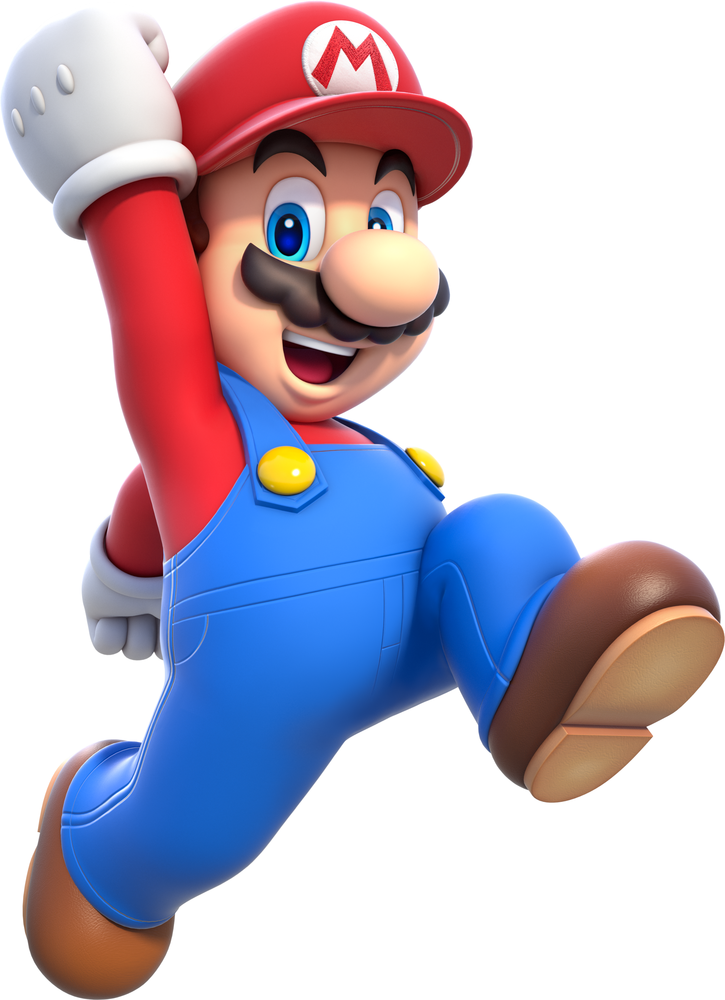

Meet Key Players
Mario

Mario is a character created by Japanese video game designer Shigeru Miyamoto.
He is the title character of the Mario franchise and the mascot of Japanese video game company
Nintendo.
Mario has appeared in over 200 video games since his creation. Depicted as a short, pudgy,
Italian plumber who resides in the Mushroom Kingdom, his adventures generally center on rescuing
Princess Peach from the Koopa villain Bowser. Mario has access to a variety of power-ups that
give him different abilities. Mario's fraternal twin brother is Luigi.
Google Mario
Bowser
 Bowser (クッパ, Kuppa, "Koopa") or King Koopa, is a fictional character,
the primary antagonist in Nintendo's Mario franchise, and the arch-nemesis of Mario.
In Japan, the character bears the title of Daimaō (大魔王, "Great Demon King").
Bowser is the leader of the turtle-like Koopa race. His ultimate goals are to kidnap Princess
Peach
and to defeat Mario and Luigi to conquer the Mushroom Kingdom.
Bowser's defining traits are his monstrous appearance with dragon-like elements,
full-throated roar, fire-breathing abilities,
never-ending conflict with Mario, and persistent kidnapping of Peach.
Bowser (クッパ, Kuppa, "Koopa") or King Koopa, is a fictional character,
the primary antagonist in Nintendo's Mario franchise, and the arch-nemesis of Mario.
In Japan, the character bears the title of Daimaō (大魔王, "Great Demon King").
Bowser is the leader of the turtle-like Koopa race. His ultimate goals are to kidnap Princess
Peach
and to defeat Mario and Luigi to conquer the Mushroom Kingdom.
Bowser's defining traits are his monstrous appearance with dragon-like elements,
full-throated roar, fire-breathing abilities,
never-ending conflict with Mario, and persistent kidnapping of Peach.
Google Bowser
Donkey Kong
 Donkey Kong, also known simply as DK, D.K., or D. Kong,[1][2] is a major character in the
Mario franchise and the main protagonist of the Donkey Kong franchise.
He is a powerful and carefree Kong that lives in Donkey Kong Island, and he likes to collect
bananas
and spend time with his friends, particularly his best friend and sidekick Diddy Kong.
However, he has also been portrayed as an antagonist on multiple occasions,
mainly in the Mario vs. Donkey Kong series.
Donkey Kong, also known simply as DK, D.K., or D. Kong,[1][2] is a major character in the
Mario franchise and the main protagonist of the Donkey Kong franchise.
He is a powerful and carefree Kong that lives in Donkey Kong Island, and he likes to collect
bananas
and spend time with his friends, particularly his best friend and sidekick Diddy Kong.
However, he has also been portrayed as an antagonist on multiple occasions,
mainly in the Mario vs. Donkey Kong series.
Google Donkey